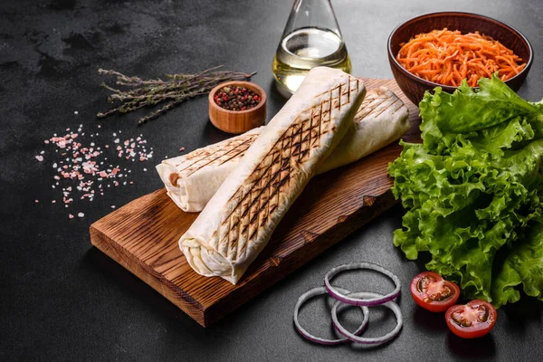

Shawarma
Home

Description
Shawarma is a popular Middle Eastern dish that consists of thinly sliced meat, typically beef, chicken, or lamb, that is marinated in a blend of spices and then cooked on a vertical rotisserie. The meat is typically served in a pita bread or flatbread wrap, along with a variety of toppings such as lettuce, tomatoes, onions, and a tangy garlic sauce. Shawarma is a flavorful and satisfying meal that is enjoyed by people all over the world. It is often served as a street food or fast food, and is a popular choice for a quick and delicious meal on the go.
Ingredients
- 1 pound boneless, skinless chicken thighs
- 2 tablespoons olive oil
- 2 tablespoons lemon juice
- 2 cloves garlic, minced
- 1 teaspoon ground cumin
- 1 teaspoon ground paprika
- 1/2 teaspoon ground turmeric
- 1/2 teaspoon ground cinnamon
- 1/4 teaspoon cayenne pepper
- Salt and pepper to taste
- Pita bread or flatbread for serving
- Optional toppings: lettuce, tomatoes, onions, garlic sauce
Instructions
- In a large bowl, combine olive oil, lemon juice, garlic, cumin, paprika, turmeric, cinnamon, cayenne pepper, salt, and pepper. Add the chicken thighs to the marinade and toss to coat. Cover and refrigerate for at least 1 hour or overnight for best results.
- Preheat a grill or grill pan over medium-high heat. Remove the chicken from the marinade and grill for about 5-7 minutes per side, or until the chicken is cooked through and has nice grill marks.
- Remove the chicken from the grill and let it rest for a few minutes before slicing it into thin strips.
- Warm the pita bread or flatbread on the grill for a minute or two until it is soft and pliable.
- To assemble the shawarma wrap, place some of the sliced chicken onto the center of the pita bread. Add your desired toppings such as lettuce, tomatoes, onions, and garlic sauce. Roll up the pita bread tightly around the filling and serve immediately.